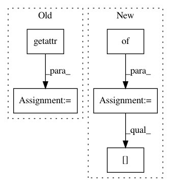

eb83dae02b63b9a91492c3bcabf790163419a00d,loudml-import/loudml/import_tool.py,,main,#,12
Before Change
delete_db = getattr(source, "delete_db", None)
if callable(delete_db):
delete_db()
delete_index = getattr(source, "delete_index", None)
if callable(delete_index):
delete_index()
create_db = getattr(source, "create_db", None)
After Change
if arg.flush:
source.drop()
kwargs = {}
template = parser.get_template(arg.database, arg.measurement)
if template:
kwargs["template_name"] = arg.database
kwargs["template"] = template
source.init(**kwargs)
In pattern: SUPERPATTERN
Frequency: 3
Non-data size: 5
Instances
Project Name: regel/loudml
Commit Name: eb83dae02b63b9a91492c3bcabf790163419a00d
Time: 2018-05-07
Author: vianney.bajart@gmail.com
File Name: loudml-import/loudml/import_tool.py
Class Name:
Method Name: main
Project Name: keras-team/keras
Commit Name: 79edae58d5892c5a7eb19b68f9e79dfae4682e20
Time: 2016-09-09
Author: kuza55@gmail.com
File Name: keras/backend/tensorflow_backend.py
Class Name: Function
Method Name: __call__
Project Name: rail-berkeley/softlearning
Commit Name: 0e49e55d906660e5c9168447c77ebc6d917dda5c
Time: 2018-10-22
Author: hartikainen@berkeley.edu
File Name: softlearning/samplers/utils.py
Class Name:
Method Name: get_sampler_from_variant